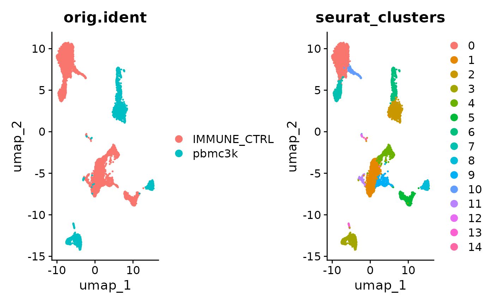
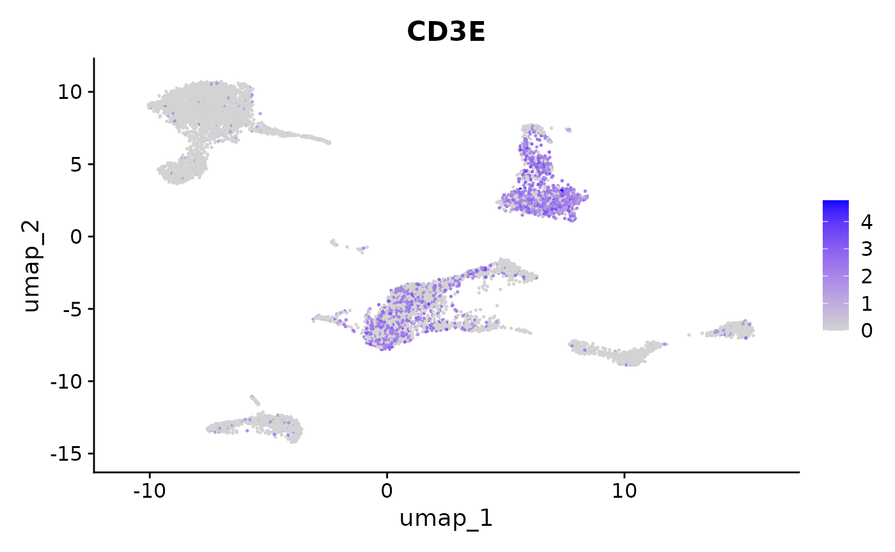
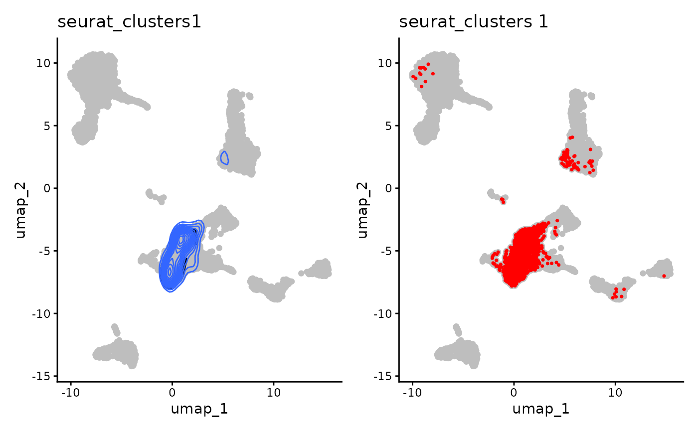
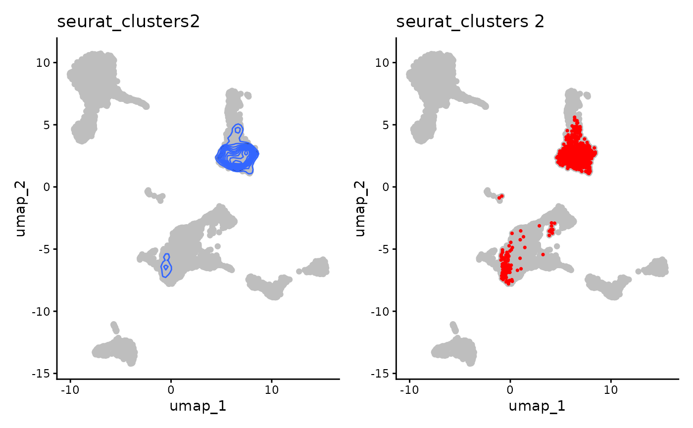
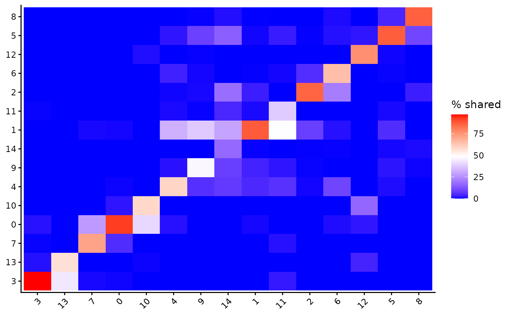
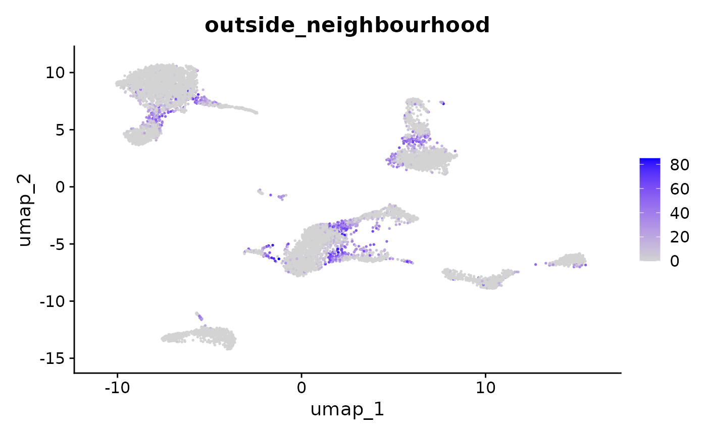
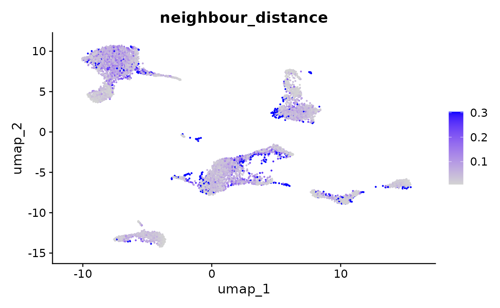

Tutorial
Tutorial.RmdIn this tutorial we will use 2 different PBMC datasets from SeuratData to demonstrate usage.
Setup
Load the necessary libraries.
library(SCneighbours)
library(Seurat)
#> Loading required package: SeuratObject
#> Loading required package: sp
#> 'SeuratObject' was built under R 4.5.0 but the current version is
#> 4.5.2; it is recomended that you reinstall 'SeuratObject' as the ABI
#> for R may have changed
#>
#> Attaching package: 'SeuratObject'
#> The following objects are masked from 'package:base':
#>
#> intersect, tLoad Data
We will use the 3k PBMCs and the control pbmcs from the interferon B datasets.
SeuratData::InstallData("ifnb")
#> Installing package into '/home/runner/work/_temp/Library'
#> (as 'lib' is unspecified)
SeuratData::InstallData("pbmc3k")
#> Installing package into '/home/runner/work/_temp/Library'
#> (as 'lib' is unspecified)
ifnb <- SeuratData::LoadData("ifnb")
#> Validating object structure
#> Updating object slots
#> Ensuring keys are in the proper structure
#> Warning: Assay RNA changing from Assay to Assay
#> Ensuring keys are in the proper structure
#> Ensuring feature names don't have underscores or pipes
#> Updating slots in RNA
#> Validating object structure for Assay 'RNA'
#> Object representation is consistent with the most current Seurat version
#> Warning: Assay RNA changing from Assay to Assay5
pbmc <- SeuratData::LoadData("pbmc3k")
#> Validating object structure
#> Updating object slots
#> Ensuring keys are in the proper structure
#> Warning: Assay RNA changing from Assay to Assay
#> Ensuring keys are in the proper structure
#> Ensuring feature names don't have underscores or pipes
#> Updating slots in RNA
#> Validating object structure for Assay 'RNA'
#> Object representation is consistent with the most current Seurat version
#> Warning: Assay RNA changing from Assay to Assay5
ifnb <- subset(ifnb, stim == 'CTRL')Seurat Analysis
The PBMCs are merged without integration and Run through a standard pipeline to generate a nearest neighbour graph, clusters, and UMAP reduction.
seu <- merge(ifnb, pbmc)
seu <- NormalizeData(seu)
#> Normalizing layer: counts.ifnb
#> Normalizing layer: counts.pbmc3k
seu <- FindVariableFeatures(seu)
#> Finding variable features for layer counts.ifnb
#> Finding variable features for layer counts.pbmc3k
seu <- ScaleData(seu)
#> Centering and scaling data matrix
seu <- RunPCA(seu, verbose = F)
seu <- FindNeighbors(seu, dims = 1:30, reduction = "pca")
#> Computing nearest neighbor graph
#> Computing SNN
seu <- FindClusters(seu, resolution = 0.5)
#> Modularity Optimizer version 1.3.0 by Ludo Waltman and Nees Jan van Eck
#>
#> Number of nodes: 9248
#> Number of edges: 391141
#>
#> Running Louvain algorithm...
#> Maximum modularity in 10 random starts: 0.9226
#> Number of communities: 15
#> Elapsed time: 1 seconds
seu <- RunUMAP(seu, dims = 1:30, reduction = "pca", verbose = F)
#> Warning: The default method for RunUMAP has changed from calling Python UMAP via reticulate to the R-native UWOT using the cosine metric
#> To use Python UMAP via reticulate, set umap.method to 'umap-learn' and metric to 'correlation'
#> This message will be shown once per session
FeaturePlot(seu, "CD3E")
Here the T cells (CD3 positive) are split into 2 clusters for the separate datasets.
Visualize Neighbourhoods
Using SCneighbours we can see that there is neighbourhood sharing between the 2 seperate T cell clusters.
visualize_neighbourhood(seu, meta_data_column = 'seurat_clusters', meta_data_highlight = 1, 'umap', density = T) +
visualize_neighbourhood(seu, meta_data_column = 'seurat_clusters', meta_data_highlight = 1, 'umap', density = F)
visualize_neighbourhood(seu, 'seurat_clusters', 2, density = T, percent = 90) +
visualize_neighbourhood(seu, 'seurat_clusters', 2, density = F)
Generate Heatmap
A heatmap showing all neighbourhood sharing of clusters can be generated with visualise_neighbour_percentage.
visualise_neighbour_percentage(seu, graph = 'RNA_nn', meta_data_column = 'seurat_clusters')
Outside Neighbours
For each cell we can calculate the percentage of cells from its neighbours share the cells cluster (or other metadata column).
seu <- calculate_outside_neighbours_cell(seu, 'seurat_clusters',colname = 'outside_neighbourhood')
FeaturePlot(seu, 'outside_neighbourhood')
Here we see can see the high percentage cells form the boundaries between clusters, even when those boundaries don’t appear close together on the UMAP.
Neighbour Distance
For each cell we can calculate the variance in the distance to it it neighbours based on a reductions embeddings. This can be useful to see if there are any problems with your UMAP or there are some problamtic cells in your dataset.
seu <- calculate_neighbour_distance_for_all_cells(seu, reduction = 'umap', colname = 'neighbour_distance')
FeaturePlot(seu, 'neighbour_distance')
FeaturePlot(seu, 'neighbour_distance', min.cutoff = 'q5', max.cutoff = 'q95')